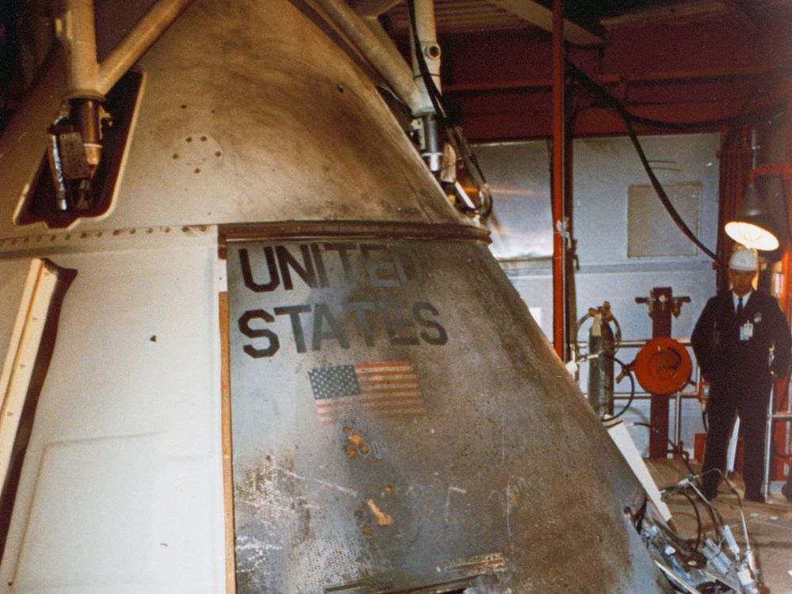
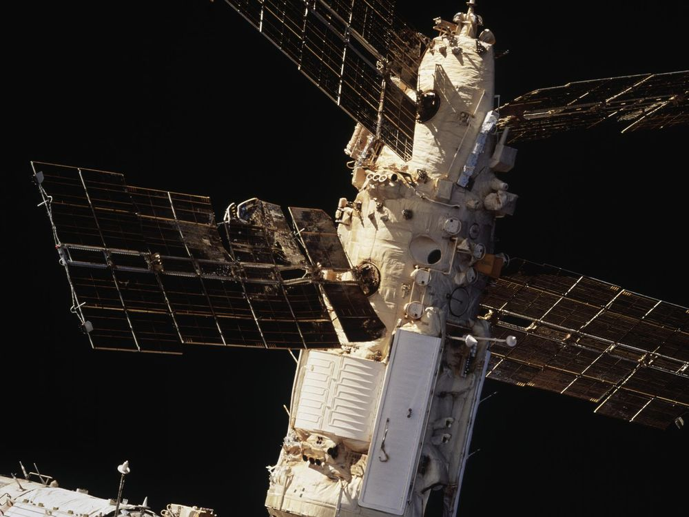
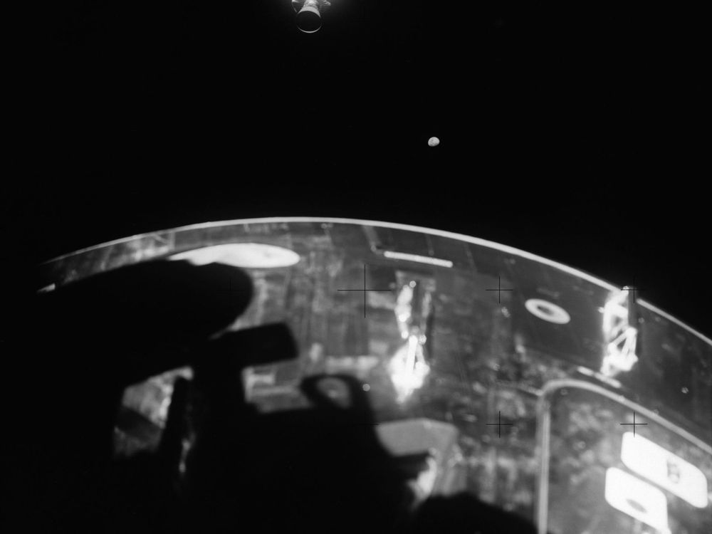
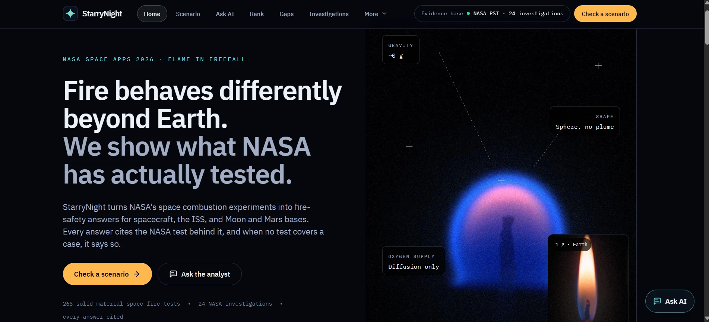
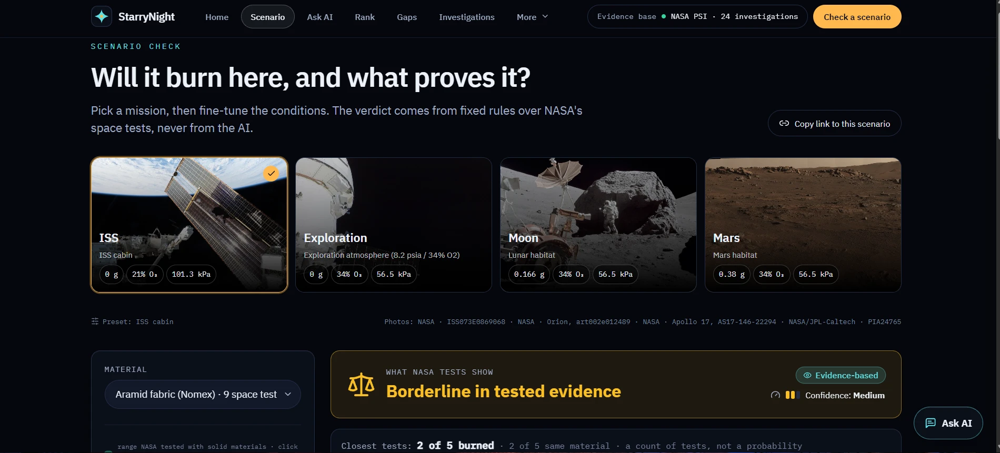

Space fire safety answers, built only on NASA evidence.
Hot gas does not rise. Flames feed on slow diffusion or a fan.
NASA's 263 solid-material space tests all ran at 13.6–22.2% oxygen and about 0 g.
Habitat engineers choosing cabin materials, and researchers planning the next fire tests.




Pick a material and a place, or type it in your own words.
Answers only from NASA records. Every fact links to its source.
24 NASA investigations scored 0–100, with reasons.
Untested conditions, 8 clean datasets, equipment and Earth uses.

5 closest NASA tests shown, each with its file and row.
It does not guess. It shows the closest evidence and NASA's 0 g and 1 g results that bound partial gravity.
Source
24
NASA PSI combustion investigations flown on the ISS and Cygnus (public domain, CC0): BASS, Saffire, SAME, FLEX, ACME and more.
Tests used
1,276
space flame tests: 263 solid materials, 353 fuel droplets, 660 gas flames.
Original NASA files, fingerprinted, never edited.
Every row keeps its NASA file and row number. Outcomes marked observed, inferred or not recorded.
Fixed rules find the NASA tests closest to your scenario and what was never tested.
The AI writes only from that NASA evidence, with a citation on every fact.
Works now · live at astrofire.vercel.app
Limits
Use of AI: an open-weight model (gpt-oss-120b via Groq) writes answer text from NASA evidence chosen by our code; verdicts and numbers come from fixed rules. The team used AI coding assistants (Claude) during development. No AI-generated images are used.
Who it helps
Next steps (planned, not built yet)
Background photo: NASA, ISS040-E-062704